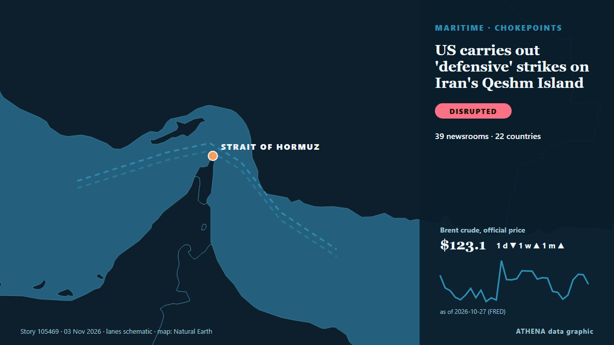

ATHENA Glaux Intelligences — Globale Nachrichtenanalyse — jede Zahl erklärt
Weltnachrichten, über Ländergrenzen hinweg geprüft
ATHENA Glaux verfolgt Hunderte Nachrichtenmedien weltweit und fasst ihre Berichte zu Ereignissen zusammen. Zu jedem Ereignis sehen Sie, wie viele Medien in wie vielen Ländern berichtet haben, wer zuerst berichtete, und einen Risikowert mit seinen Gründen — alle 15 Minuten aktualisiert, in sieben Sprachen.
Live aus den NachrichtenUS carries out 'defensive' strikes on Iran's Qeshm Island56 Medien · 29 Länder · Risiko 5.9 · Quellen: Arab News, Arab Times

GeopolitikUS carries out 'defensive' strikes on Iran's Qeshm Island
Several explosions were reported on Iran’s Qeshm Island, according to IRNA, though the cause remains unknown. von Arab News
Schlagzeilen werden auf Englisch angezeigt, wie veröffentlicht.
ECB keeps rates on hold as Christine Lagarde announced her resignation
The deposit rate will be left at 2.5% on Thursday, analysts say. von Luxembourg Times
The top 10 things to watch for in the US midterm elections
And what it could all mean for New Zealand. von RNZ National

Heute in Zahlen
| 09:00 | 1068 |
|---|---|
| 10:00 | 747 |
| 11:00 | 741 |
| 12:00 | 989 |
| 13:00 | 762 |
| 14:00 | 843 |
| 15:00 | 851 |
| 16:00 | 866 |
| 17:00 | 847 |
| 18:00 | 582 |
| 19:00 | 636 |
| 20:00 | 387 |
| 21:00 | 425 |
| 22:00 | 463 |
| 23:00 | 398 |
| 00:00 | 440 |
| 01:00 | 326 |
| 02:00 | 400 |
| 03:00 | 213 |
| 04:00 | 512 |
| 05:00 | 540 |
| 06:00 | 646 |
| 07:00 | 463 |
| 08:00 | 771 |
Risiko der heutigen Ereignisse
US delivery of 500 Patriot missiles to Ukraine will span 3 years starting in 2030
NATO Supreme Allied Commander Europe General Alexus Grynkewich said the United States continues to supply Ukraine with Patriot interceptor missiles, as well as weapons packages paid for by European… von Ukrinform (English)
Oleshky ceasefire expires, Ukraine evacuates civilians from parts of Kherson region
Nov 1 - Ukraine's military said it evacuated 167 people from threatened areas of southern Kherson region on Sunday as a temporary local ceasefire expired — two days after buses carried residents out… von The Straits Times
UK PM Burnham says he is ‘open’ to formal apology for slavery, but rules out reparations
At least 12.5 million Africans were abducted and sold into slavery. von Express Tribune
Am meisten berichtet
- Geopolitik
Israel’s Eisenkot accuses Netanyahu of trying to discredit election results
51 Länder · 130 Medien
Neue Signale
- Plötzlicher Anstieg · Jetzt aktivApple's
- Plötzlicher Anstieg · Jetzt aktivQeshm Island
- Plötzlicher Anstieg · Jetzt aktivBTC
- Neuer Name in den Nachrichten · Jetzt aktivKomyshuvakha
- Plötzlicher Anstieg · Jetzt aktivBelgium
Amtliche Warnungen
- Red notification for tropical cyclone FOUR-26. Population affected by Category 1 (120 km/h) wind speeds or higher is 1.156 million .Red · GDACS ·
- Cyber chief: UK facing AI-powered attacks on critical infrastructure within two yearsadvisory · UK National Cyber Security Centre ·
- M 6.0 - 165 km NW of Port-Olry, VanuatuM6.0 · USGS ·
- M 6.2 - 43 km ESE of Port-Olry, VanuatuM6.2 · USGS ·
- M 6.0 - 214 km NW of Port-Olry, VanuatuM6.0 · USGS ·
ATHENA auf Telegram
Treten Sie kostenlos der Gruppe ATHENA Glaux bei und erhalten Sie die Nachrichten, sobald sie hier erscheinen:
- Eilmeldungen mit Risiko 6 oder mehr
- stündlich eine Übersicht der wichtigsten Ereignisse
- Updates der Risiko-Tracker
- das tägliche Briefing jeden Morgen um 10:00 Uhr (Athener Zeit)
- einen Wochenausblick
- amtliche Warnungen, Frühsignale und steigende Risiken
Tippen Sie auf die Schaltfläche, Telegram öffnet sich, dann Beitreten. Beiträge sind auf Englisch; Stummschalten oder Austreten jederzeit. Noch kein Telegram? Kostenlos auf telegram.org.
Risiko-Tracker
Mehr ›Globale Risiken – Woche 45, 2026 (2.–8. Nov.) ›
Geopolitik, Politik und Sicherheit
Mehr ›Neighbors are Iran's priority, Araghchi says
Iran's Qalibaf says progress only possible when Tehran's seven conditions are met Iran's parliament speaker said on Thursday that Tehran's conditions had been repeatedly and clearly communicated to… von Middle East Eye
- Kriege und Konflikte
Death toll from Russian strikes on school in Komyshuvakha rises to 24
- Kriege und Konflikte
Russian bomb attacks on aid centre and shelter kill 26, Ukrainian officials say
- Diplomatie und Gipfel
Urgent: U.S. to host trilateral talks with Russia, Ukraine in Abu Dhabi on Nov. 10-11, says Witkoff
- Wahlen und Politik
Netanyahu Is Pressing Trump to Attack Iran After the Midterms, Officials Say
Wirtschaft, Finanzen und Märkte
Mehr ›Wage protests disrupt 529 Bangladesh garment factories as government forms pay board
Labour unrest disrupted operations at 529 garment factories in Bangladesh on 1 November 2026, with 987,190 workers leaving their workplaces, according to a situation report from the Bangladesh… von Maritime Gateway
Handel, Industrie und Infrastruktur
Mehr ›U.S. to suspend South Africa, Rwanda from duty-free trade access
Trump terminates South Africa from AGOA Vusi.Bafetane Mon, 11/02/2026 - 19:32 WASHINGTON - The United States Trade Representative on Monday said Washington would exclude South Africa and Rwanda from… von eNCA
- Handel und Abkommen
Trump to remove Rwanda and South Africa from US trade deal
- Luftfahrt, Bahn und Straße
Türkiye, Kazakhstan target $15B in bilateral trade
- Schifffahrt und Häfen
Indian sailor killed after vessel attacked off Oman
- Schifffahrt und Häfen
US Strikes Iranian Targets in the Strait of Hormuz, Official Says
Energie, Rohstoffe und Umwelt
Mehr ›World’s energy supply buffers have been eroded, ADNOC CEO says
The world has eroded its supply buffers by draining nearly 1 billion oil barrels from… von BusinessWorld
- Öl und Gas
Mitsubishi to sell part of stake in Canada LNG project to Blackstone funds
- Extremwetter und Naturkatastrophen
Storm Agneta Floods Rhodes, Sweeps Away 60 Cars and Damages Homes Across Greece
- Extremwetter und Naturkatastrophen
Japan launches new national agency to deal with disasters
- Öl und Gas
Oil edges up after report of US strike on Iran's Qeshm Island
Technologie, KI und Cybersicherheit
Mehr ›Africa: Six in Seven Journalist Murders Go Unpunished, Unesco Reports
[UN News] Global impunity for journalist killings has risen for the first time in more than a decade, while the growing use of drones is an emerging threat for reporters in conflict zones, according… von AllAfrica
- Künstliche Intelligenz
AI models mostly smarter than top scientists, OpenAI's Altman says
- Cybersicherheit
Fridge cyberattack on supermarkets across Europe prompts EU warning
- Cybersicherheit
British adventurer completes 28-year, 50,000km walk home
- Künstliche Intelligenz
Merz says next German president 'must be a woman' — report
Unternehmen und Investitionen
Mehr ›Aramco’s Q3 net profit jumps 34.5% to $36.3bn
RIYADH: Saudi Aramco’s net profit rose 34.5 percent year on year to $36.3 billion in the third quarter, boosted by higher revenue and a gain from the sale of its stake in Malaysian refining and… von Arab News
- Fusionen und Übernahmen
TotalEnergies to Take Operatorship of Two Major Gas Fields off Malaysia
- Unternehmensstrategie
Korean Air cannot confirm Hoban has overtaken Cho in Hanjin KAL
- Fusionen und Übernahmen
Unhappy with Sunetra Pawar and her son Parth, six NCP biggies meet Amit Shah
- Unternehmensstrategie
Apple FYQ4 Revenue Tops Forecasts On iPhone Sales As New CEO John Ternus Steps Up
Gesundheit, Wissenschaft und Forschung
Mehr ›New York state reports first measles-linked child death in over 30 years amid outbreak
The state's governor declared a state disaster emergency in October in response to the measles outbreak. von The Straits Times
- Ausbrüche und Gesundheit
Nora Fatehi not an accused in Sukesh Chandrashekhar case, says actor’s legal team
- Ausbrüche und Gesundheit
Hearing of the Irakli Garibashvili case on its merits to start today, to be attended by Garibashvili
- Weltraum und Physik
The moon, Mars, and Jupiter shine in the heart of the Lion overnight on Nov. 1-2
- Ausbrüche und Gesundheit
Washington state resident dies from bird flu following exposure to infected cattle
Gesellschaft, Recht und Politik
Mehr ›On Camera, 2 Helicopters Collide In Nepal While Landing, 1 Killed
The incident which the police confirmed happened at a heliport in Solukhumbu, 250 km from the capital city Kathmandu, has gone viral on social media. von NDTV
- Gerichte und Justiz
US Supreme Court rejects bid by Trump administration to set aside 20,000 California ballots
- Verbraucher und Gesellschaft
Legal challenge to Australia’s social media ban to start in High Court
- Gesetze und Politik
Melbourne Cup 2026 finishing order from first to last
- Kriminalität und Korruption
Mexican investigators raid storage unit rented by Meghan's father Thomas Markle
Sport
Mehr ›AFC Postpones 2027 Asian Cup in Saudi Arabia Amid Regional Security Concerns
RIYADH, Nov 3: The Asian Football Confederation (AFC) has postponed the 2027 AFC Asian Cup in Saudi Arabia by nearly a year, citing exceptional regional circumstances, logistical d... von Arab Times
Kultur, Menschen und Lifestyle
Mehr ›Thomas Ong, 57, slips & fractures ankle 10 days into 45-day Japan trip after photographing waterfall
He will let his ankle heal by itself instead of having surgery. von Mothership
- Royals und Prominente
Romesh Ranganathan and Sebastian Croft relieved Celebrity Traitors win is out
- Musik
US rapper Macklemore launches 'Free Palestine Tour'
- Film und Fernsehen
‘The Remarried Empress’ Gets Surprise Early Premiere On Disney+/Hulu
- Musik
Sam Fender’s John Lewis ad and the Rolling Stones covers that have come before